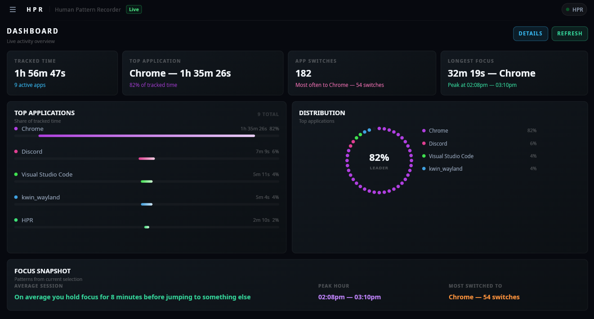

HPR / Human Pattern Recorder
Compiled, offline, zero-account activity tracker
...stars
...downloads
...old
Watches your active window, logs usage history, and builds insights. All locally. No accounts, no telemetry by default, no server. Runs from the system tray on Windows and Linux. Data stored in plain SQLite files you can open with any viewer.
- Cross-platform: Windows 10/11 + Linux (Hyprland, GNOME, KDE, Cinnamon, niri)
- Lua 5.4 extension engine with hot-reload and EventHub
- Custom theme system, full Slint UI replacement at runtime
- Browser tab tracking via companion extension
- App usage limits and daily goals with notifications
- Advanced pattern analysis and day construction timeline
- SQLite3 storage, one file per day, 30-100KB each
- System tray with native D-Bus (Linux) and Win32 (Windows)
